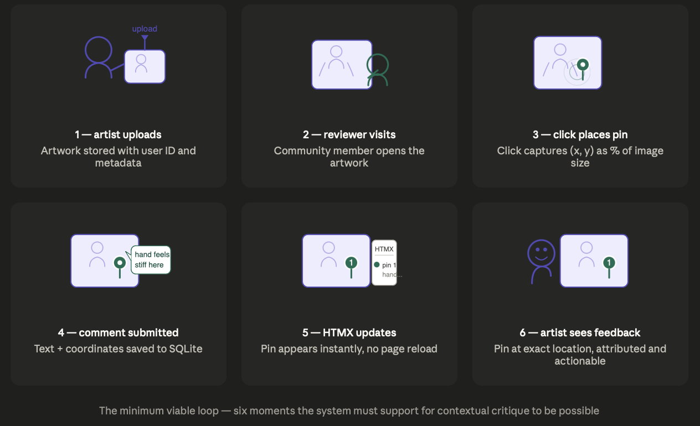
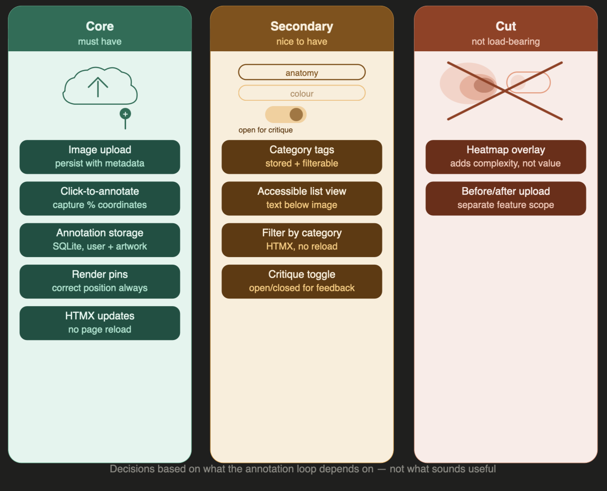
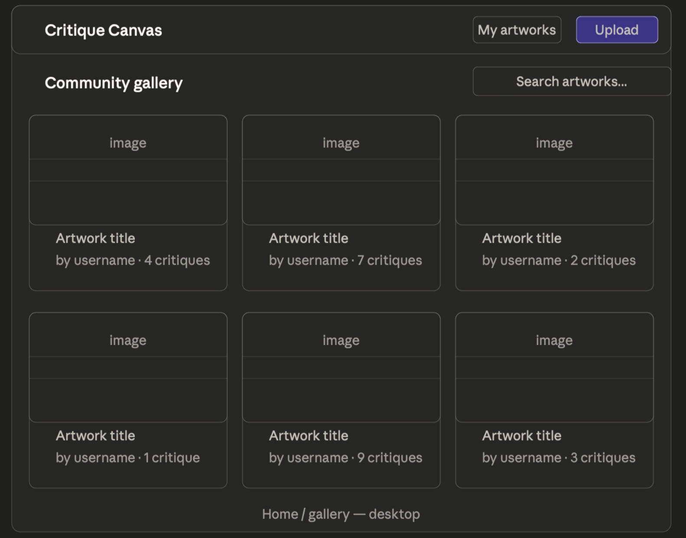
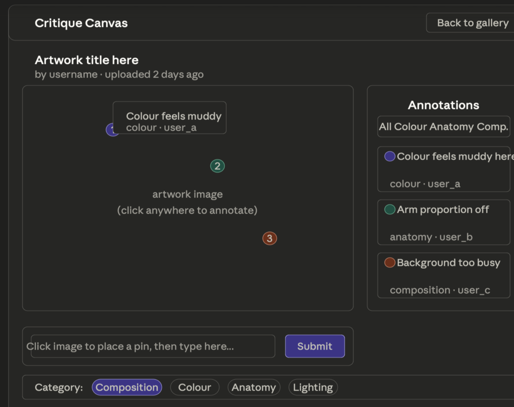
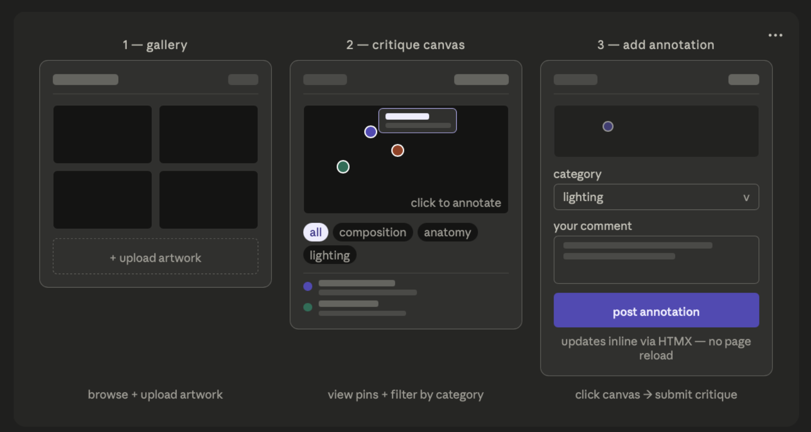

Blog 2 ended with a deliberate gap. The requirements were intentionally incomplete — and that was the right call. This post is where the concept begins shifting from an appealing idea into concrete, testable behaviours.
The question driving this post is not "what could this app include?" but "what behaviours must exist for contextual critique to be possible?" That reframe kept scope disciplined.
Reframing Requirements as System Behaviour
I worked backwards from one scenario: an artist uploads a figure drawing and wants specific feedback on the anatomy of the hands. What must the system support?
The artist uploads an image. A reviewer clicks the exact region they are commenting on. That comment is stored against that position. When the artist returns, the annotation appears at the correct location, attributed to who left it.
That is the minimum viable loop. Everything else is secondary.

Figure 1: Six moments the system must support — everything in the requirements list exists to serve this sequence.Category tagging is useful — but the loop functions without it. A heatmap adds complexity without improving critique. These are secondary not because they are bad ideas, but because they are not load-bearing.
Core Functional Requirements — With Reasoning
1. Image upload and persistent storage
Users upload a JPEG or PNG stored with metadata — user ID,
timestamp, filename. This establishes artwork as the parent
object for every annotation. Without reliable persistence,
nothing else is possible.
2. Click-to-annotate interaction When a user clicks the artwork, the system captures the position and opens a comment input. Coordinates must be stored as percentages of the image container, not absolute pixels — pixel coordinates break across screen sizes; percentages scale with the container. This is a technical decision driven by one requirement: spatial accuracy across devices.
3. Annotation storage and retrieval Each annotation is stored in SQLite with relationships to both the artwork and the user session — a natural fit for a relational model.
4. Rendering pins at correct positions Pins must appear exactly where the user clicked. Incorrect scaling causes drift and overlap, shaping both rendering logic and the data model.
5. HTMX-driven inline updates New annotations must appear without a full page reload — because reloading resets the user's spatial view of the artwork. HTMX partial updates preserve the canvas state while appending the new pin.
Secondary Requirements — Not Load-Bearing
- Category tags — stored and filterable, but not essential to the loop
- Accessible list view — annotations as text below the image; critical for keyboard and screen reader users
- Filter by category — HTMX-driven, depends on category tags existing first
- Critique toggle — open or closed for feedback; one boolean field in the artwork table
A heatmap overlay was cut entirely — rendering complexity without improving critique quality. Before/after upload comparison was also cut.

Figure 2: Requirements mapped by priority — what the annotation loop depends on, what enhances it, and what was cut.Early Wireframes — Requirements Made Visual
Before writing any code, we sketched the key interfaces to test whether the requirements were buildable as described. Each wireframe maps directly to a functional requirement.

Figure 3: Gallery wireframe — artwork cards with critique counts, search, upload button. Confirms the gallery needs no complex data beyond artwork metadata.
Figure 4: Artwork view wireframe — annotation pins, comment sidebar, category filter pills. Every element maps to a core requirement from the list above.
Figure 5: Three-step flow — gallery to canvas to annotation submission. HTMX labelled at the point of submit, confirming no page reload is a design requirement not just a technical convenience.Responsibilities This Stage Surfaced
Critique Canvas stores user-uploaded artwork linked to session IDs — data handling must be intentional. The brief requires AA accessibility compliance, and for an annotation-heavy interface this is a specific challenge: pins are inherently visual, so the accessible list view is a parallel requirement from the start, not an afterthought. For evaluation, I plan to validate coordinate accuracy across screen sizes, test keyboard navigation, and verify contrast ratios against WCAG AA standards.
Reflection
The requirements are tighter but not final. The wireframes above tested buildability before any code was written — and confirmed the core interaction is structurally sound. The pixel-vs-percentage coordinate decision remains the clearest technical choice grounded in a requirement. The next step is mapping these to database schema and interaction flows.
Requirements should constrain the build — but they should also change when the build reveals something the requirements missed.